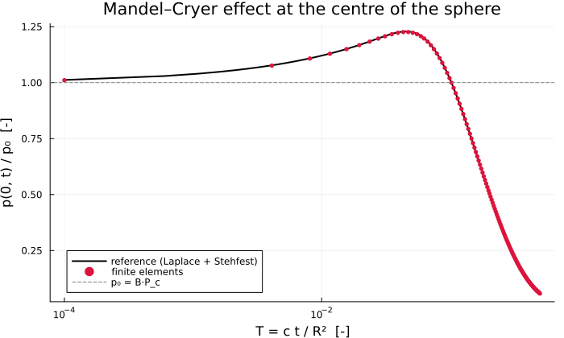
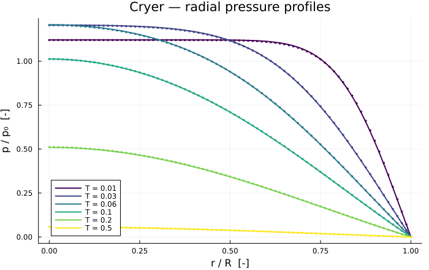

Cryer's Problem
A saturated poroelastic sphere, drained at its surface, loaded at $t = 0$ by a uniform radial compression. The pore pressure at the centre rises 23 % above its undrained value before decaying — the Mandel–Cryer effect (Cryer, 1963), three times stronger here than in the plane-strain Mandel case, which makes this the most severe of the three poroelastic benchmarks.
It is also the case that forces a curvilinear element. Terzaghi and Mandel are Cartesian; spherical symmetry brings in hoop strains $\varepsilon_{\theta\theta} = u_r/r$ that no Cartesian element produces, and an $r^2$ integration weight. The element written below is the prototype of the axisymmetric machinery the Barcelona Basic Model will need.
Problem
Sphere of radius $R$. At $t = 0$ a compressive radial traction $P_c$ is applied to the surface, which is held drained.
| Boundary | Condition |
|---|---|
| $r = 0$ | symmetry: $u_r = 0$, no flux |
| $r = R$ | drained $p = 0$, traction $\sigma_{rr} = -P_c$ |
Reference solution
Derived here rather than transcribed, from the single-porosity formulation of (Mehrabian and Abousleiman, 2018) (their Table 1). Spherical symmetry makes the displacement field irrotational, so the momentum balance integrates once to
\[\varepsilon = c_m\,p + f(t), \qquad c_m = \frac{\alpha(1-2\nu)}{2G(1-\nu)} = \frac{\alpha}{M_o}\]
with $f$ an unknown function of time alone. Substituting into the fluid mass balance leaves a diffusion equation for the pressure with a source driven by $f$:
\[S \frac{\partial p}{\partial t} - \kappa \frac{1}{r^2}\frac{\partial}{\partial r}\left(r^2 \frac{\partial p}{\partial r}\right) = -\alpha f'(t), \qquad S = \frac{1}{M} + \frac{\alpha^2}{M_o}\]
$S$ is exactly the storage coefficient the package already uses: $c = \kappa/S$ is the same consolidation coefficient as in the Terzaghi and Mandel benchmarks.
In Laplace space this is an ordinary differential equation. Taking the solution regular at $r = 0$, imposing $p(R) = 0$, integrating $u_r = r^{-2}\int_0^r x^2 \varepsilon\,\mathrm{d}x$ and closing with the traction condition $\sigma_{rr}(R) = -P_c H(t)$ gives, in $r^* = r/R$ and $t^* = ct/R^2$ with $\hat s$ conjugate to $t^*$:
\[\tilde P(r^*, \hat s) = \frac{P_c}{\hat s}\,\frac{\alpha}{2GS}\, \frac{1 - \dfrac{\sinh(r^*\sqrt{\hat s})}{r^*\sinh\sqrt{\hat s}}}{D(\hat s)}, \qquad D(\hat s) = \frac{1+\nu}{3(1-2\nu)} + \frac{2q}{3} - 2q\left[\frac{\coth\sqrt{\hat s}}{\sqrt{\hat s}} - \frac{1}{\hat s}\right]\]
with $q = \alpha c_m/S$. The inversion to the time domain is numerical, by the Stehfest algorithm — the same route the source paper takes.
The expression is checked by the initial and final value theorems before it is used: it must give the Skempton response $p(r,0^+) = B P_c$, uniform in $r$, and decay to zero.
include("biot_common.jl")Main.uniform_scheduleModel
The same material as Mandel's problem, so the two spherical and plane-strain overshoots are directly comparable.
const CRYER_MATERIAL = HomogeneousBiot(;
E = 1.0e8, nu = 0.2, k = 1.0e-13, mu_l = 1.0e-3, b = 1.0, N = 7.2e-9,
)
const R_SPHERE = 1.0 # radius [m]
const P_CONF = 1.0e6 # confining traction [Pa]
# `compaction_coefficient` and `storage_coefficient` come from the package.1.0e6Reference solution in Laplace space
sinh(√ŝ) overflows above ŝ ≈ 1e5, so both quotients are written in forms that stay finite: the ratio as decaying exponentials, and g(x)/(x² sinh x) as coth(x)/x − 1/x².
_shape_ratio(r, x) = exp((r - 1) * x) * (1 - exp(-2r * x)) / (r * (1 - exp(-2x)))
_g_term(x) = coth(x) / x - 1 / x^2
"""
cryer_laplace(m, r, ŝ; Pc) -> P̃(r*, ŝ)
Pore pressure in Laplace space, with `ŝ` conjugate to the dimensionless time `t* = ct/R²`.
"""
function cryer_laplace(m::HomogeneousBiot, r, ŝ; Pc = P_CONF)
_, G = lame(m)
S = storage_coefficient(m)
q = m.b * compaction_coefficient(m) / S
x = sqrt(ŝ)
D = (1 + m.nu) / (3 * (1 - 2m.nu)) + 2q / 3 - 2q * _g_term(x)
return (Pc / ŝ) * (m.b / (2G * S)) * (1 - _shape_ratio(r, x)) / D
endMain.cryer_laplaceInversion
By the Stehfest algorithm of biot_common.jl. This transform is elementary, so it evaluates in BigFloat throughout.
"""
cryer_pressure(m, r, t; Pc) -> p [Pa]
Pore pressure at normalised radius `r = r/R` and dimensionless time `t = c t/R²`.
"""
function cryer_pressure(m::HomogeneousBiot, r, t; Pc = P_CONF)
t <= 0 && return skempton(m) * Pc
return stehfest(ŝ -> cryer_laplace(m, big(r), ŝ; Pc = Pc), t)
endMain.cryer_pressureThe spherical element
This is the part Terzaghi and Mandel did not need. In spherical symmetry the strain has three non-zero normal components,
\[\varepsilon_{rr} = \frac{\partial u}{\partial r}, \qquad \varepsilon_{\theta\theta} = \varepsilon_{\varphi\varphi} = \frac{u}{r}\]
so the discrete strain operator for shape function $N_i$ is $B_i = [\,N_i',\; N_i/r,\; N_i/r\,]$ and the volume element carries $r^2$. Contracting with the isotropic stiffness gives, for the mechanical block,
\[K^{uu}_{ij} = \int \left[ \lambda\,(N_i' + 2N_i/r)(N_j' + 2N_j/r) + 2\mu\left(N_i'N_j' + 2\frac{N_iN_j}{r^2}\right) \right] r^2\,\mathrm{d}r\]
The hoop terms are what a Cartesian element cannot produce. The element itself lives in benchmarks/biot_common.jl as radial_element_matrices!, parameterised by the number of hoop directions: nhoop = 2 here, nhoop = 1 for the cylinder of de Leeuw's problem.
Solving
"""
run_cryer(; m, nel, T_probe, T_start, dT)
Return `(m, r, T_probe, profiles, T_hist, p_centre)`.
"""
function run_cryer(;
m = CRYER_MATERIAL,
nel = 80,
T_probe = [0.01, 0.03, 0.06, 0.1, 0.2, 0.5],
T_start = 1.0e-4,
dT = 5.0e-4,
)
c = consolidation_coefficient(m)
t_of_T(T) = T * R_SPHERE^2 / c
grid = generate_grid(Line, (nel,), Vec(0.0), Vec(R_SPHERE))
ip = Lagrange{RefLine, 1}()
dh = DofHandler(grid)
add!(dh, :u, ip)
add!(dh, :p, ip)
close!(dh)
qr = QuadratureRule{RefLine}(2)
cv_u = CellValues(qr, ip, ip)
cv_p = CellValues(qr, ip, ip)
# Symmetry at the centre, drainage at the surface
ch = ConstraintHandler(dh)
add!(ch, Dirichlet(:u, getfacetset(grid, "left"), (x, t) -> 0.0))
add!(ch, Dirichlet(:p, getfacetset(grid, "right"), (x, t) -> 0.0))
close!(ch)
update!(ch, 0.0)
n_loc = ndofs_per_cell(dh)
K1 = allocate_matrix(dh)
K2 = allocate_matrix(dh)
A = allocate_matrix(dh)
as1 = start_assemble(K1)
as2 = start_assemble(K2)
ke1 = zeros(n_loc, n_loc)
ke2 = zeros(n_loc, n_loc)
for cell in CellIterator(dh)
reinit!(cv_u, cell)
reinit!(cv_p, cell)
radial_element_matrices!(ke1, ke2, m, cv_u, cv_p, getcoordinates(cell); nhoop = 2)
assemble!(as1, celldofs(cell), ke1)
assemble!(as2, celldofs(cell), ke2)
end
# Node → dof maps (scalar u in 1D, so one dof per node per field)
u_dof = zeros(Int, getnnodes(grid))
p_dof = zeros(Int, getnnodes(grid))
u_range = dof_range(dh, :u)
p_range = dof_range(dh, :p)
for cell in CellIterator(dh)
d = celldofs(cell)
for (loc, node) in enumerate(cell.nodes)
u_dof[node] = d[u_range[loc]]
p_dof[node] = d[p_range[loc]]
end
end
# Surface traction: the boundary term of the weak form is δu σ_rr r², evaluated at
# r = R where σ_rr = −P_c.
coords = [node.x[1] for node in grid.nodes]
surface_node = argmax(coords)
f_ext = zeros(ndofs(dh))
f_ext[u_dof[surface_node]] = -P_CONF * R_SPHERE^2
schedule = uniform_schedule(T_probe; T_start = T_start, dT = dT)
x = zeros(ndofs(dh))
apply!(x, ch)
profiles = Vector{Vector{Float64}}()
probes_left = sort(T_probe)
T_hist = Float64[]
p_centre = Float64[]
centre_node = argmin(coords)
t_prev = 0.0
for T in schedule
t = t_of_T(T)
dt = t - t_prev
combine!(A, K1, K2, 1.0 / dt)
rhs = copy(f_ext)
mul!(rhs, K2, x, 1.0 / dt, 1.0)
apply!(A, rhs, ch)
x = A \ rhs
t_prev = t
push!(T_hist, T)
push!(p_centre, x[p_dof[centre_node]])
if !isempty(probes_left) && isapprox(T, probes_left[1]; rtol = 1.0e-9)
push!(profiles, [x[p_dof[i]] for i in 1:getnnodes(grid)])
popfirst!(probes_left)
end
end
return m, coords, sort(T_probe), profiles, T_hist, p_centre
end
model, rr, T_probe, p_num, T_hist, p_centre = run_cryer()(BiotPoroelastic{Float64}(1.0e8, 0.2, 1.0e-13, 0.001, 1.0, 7.2e-9), [0.0, 0.012500000000000011, 0.025000000000000022, 0.03749999999999998, 0.04999999999999999, 0.0625, 0.07500000000000001, 0.08750000000000002, 0.09999999999999998, 0.11249999999999999 … 0.8875, 0.9, 0.9125, 0.925, 0.9375, 0.95, 0.9625, 0.975, 0.9875, 1.0], [0.01, 0.03, 0.06, 0.1, 0.2, 0.5], [[800003.2206950355, 800003.2192483185, 800003.2160303325, 800003.2105762364, 800003.2023894913, 800003.190772095, 800003.1747411089, 800003.1529346228, 800003.1234869884, 800003.0838600155 … 432854.248341831, 391036.1122396625, 346940.3091831691, 300808.7658243396, 252930.75433375972, 203637.78936851732, 153296.75709736897, 102301.5051804413, 51063.22032285308, 0.0], [860148.0521138132, 860134.278773895, 860104.5463724808, 860056.5093525317, 859988.98276412, 859900.7500537476, 859790.3561865982, 859656.0426663518, 859495.7114159956, 859306.8952322436 … 255276.30715822682, 227221.3610046952, 198924.3497869778, 170454.4505437839, 141882.34172599102, 113279.6745830665, 84718.53087958104, 56270.87399047584, 28008.00056990862, 0.0], [860695.3740305044, 860557.8133199579, 860262.6822020645, 859790.5777234271, 859136.071925171, 858295.9850723667, 857267.4700691024, 856047.5361175842, 854632.890654752, 853019.8796500961 … 169720.9800392456, 150525.54831914246, 131360.28786388034, 112248.67135602467, 93214.09482153774, 74279.79515078018, 55468.768421468114, 36803.689534403326, 18306.83366262187, 0.0], [723023.6638140174, 722818.8247265858, 722379.8802134077, 721679.1002836773, 720710.2308822306, 719471.0538522187, 717960.5360965504, 716178.1164561162, 714123.4633496883, 711796.3764477334 … 116617.94496182671, 103300.75888125284, 90050.03532046615, 76876.01242056402, 63788.820295047546, 50798.462423660436, 37914.797387017265, 25147.521009946475, 12506.148979354422, 0.0], [365127.08321779943, 365004.31911807053, 364741.33318669384, 364321.6864141237, 363741.91339162603, 363001.0728697913, 362099.0384802534, 361036.06954494526, 359812.66330024455, 358429.4928577482 … 54196.17651076396, 47983.488191590666, 41810.23088791933, 35680.03912982826, 29596.496342092847, 23563.13195140883, 17583.418552087383, 11660.769133667938, 5798.534373854341, 0.0], [40750.08571105853, 40736.27025316043, 40706.67512494688, 40659.45126046024, 40594.21012573292, 40510.84778740148, 40409.352552053904, 40289.75665657975, 40152.1196241663, 39996.521265678755 … 6021.383735479661, 5330.9862570832875, 4645.022309684494, 3963.888765682286, 3287.9768216631765, 2617.6717113058307, 1953.3524241319658, 1295.3914303201275, 644.1544118242296, 0.0]], [0.0001, 0.0006000000000000001, 0.0011, 0.0016, 0.0021, 0.0026, 0.0031, 0.0036, 0.0041, 0.0046 … 0.4956, 0.4961, 0.4966, 0.4971, 0.4976, 0.4981, 0.4986, 0.4991, 0.4996, 0.5], [722131.6169492967, 733823.1808950979, 741551.138649558, 747637.812165516, 752802.2099091399, 757361.3804915099, 761485.5484977214, 765277.9854336523, 768806.7379772208, 772119.385736724 … 42083.59567087409, 41929.894131803216, 41776.753951728046, 41624.173080539025, 41472.14947555801, 41320.68110150784, 41169.765930767535, 41019.40194278879, 40869.58712461713, 40750.08571105853])Results
using Plots
B = skempton(model)
p0 = B * P_CONF
@printf("Skempton B : %.6f\n", B)
@printf("Undrained p₀ = B·P_c: %.4e Pa\n", p0)
@printf("Storage S : %.4e Pa⁻¹\n", storage_coefficient(model))
@printf("Diffusivity c : %.4e m²/s\n", consolidation_coefficient(model))
println()Skempton B : 0.714286
Undrained p₀ = B·P_c: 7.1429e+05 Pa
Storage S : 1.6200e-08 Pa⁻¹
Diffusivity c : 6.1728e-03 m²/sThe reference solution, checked before it is used
The Laplace expression must reproduce the Skempton response at $t \to 0$, uniformly in $r$, and vanish at the drained surface.
@printf("p(r,t→0)/P_c at r* = 0.1, 0.5, 0.9 : %.6f %.6f %.6f (B = %.6f)\n",
cryer_pressure(model, 0.1, 1.0e-6) / P_CONF,
cryer_pressure(model, 0.5, 1.0e-6) / P_CONF,
cryer_pressure(model, 0.9, 1.0e-6) / P_CONF, B)
@printf("p at the drained surface, t* = 0.1 : %.3e Pa\n",
cryer_pressure(model, 0.999999, 0.1))
println()p(r,t→0)/P_c at r* = 0.1, 0.5, 0.9 : 0.715149 0.715149 0.715149 (B = 0.714286)
p at the drained surface, t* = 0.1 : 9.923e-01 PaThe Mandel–Cryer overshoot
The discriminating quantity, and much larger here than in plane strain.
p_ref_centre = [cryer_pressure(model, 1.0e-8, T) for T in T_hist]
i_num = argmax(p_centre)
i_ref = argmax(p_ref_centre)
@printf("numerical peak : p/p₀ = %.5f at T = %.4f\n", p_centre[i_num] / p0, T_hist[i_num])
@printf("reference peak : p/p₀ = %.5f at T = %.4f\n", p_ref_centre[i_ref] / p0, T_hist[i_ref])
@printf("overshoot : %.1f %% above p₀ (Mandel, plane strain: 6.5 %%)\n",
100 * (p_ref_centre[i_ref] / p0 - 1))
println()
plt_hist = plot(
T_hist, p_ref_centre ./ p0;
xlabel = "T = c t / R² [-]", ylabel = "p(0, t) / p₀ [-]",
title = "Mandel–Cryer effect at the centre of the sphere",
label = "reference (Laplace + Stehfest)", lw = 2, color = :black,
xscale = :log10, legend = :bottomleft, size = (700, 420),
)
plot!(
plt_hist, T_hist[1:8:end], (p_centre ./ p0)[1:8:end];
seriestype = :scatter, ms = 3, mswidth = 0, color = :crimson, label = "finite elements",
)
hline!(plt_hist, [1.0]; ls = :dash, color = :grey, label = "p₀ = B·P_c")
plt_hist
Error against the reference
println(" T | L2 error | L∞ error [Pa]")
println("-"^44)
errors = Float64[]
for (T, pn) in zip(T_probe, p_num)
ref = [cryer_pressure(model, max(r / R_SPHERE, 1.0e-8), T) for r in rr]
e2 = norm(pn .- ref) / norm(ref)
push!(errors, e2)
@printf(" %8.4f | %.3e | %10.1f\n", T, e2, maximum(abs.(pn .- ref)))
end
println("-"^44)
@printf("worst relative L2 error: %.3e\n", maximum(errors)) T | L2 error | L∞ error [Pa]
--------------------------------------------
0.0100 | 2.667e-03 | 4986.9
0.0300 | 1.621e-03 | 1767.2
0.0600 | 1.408e-03 | 1476.1
0.1000 | 8.372e-04 | 680.7
0.2000 | 2.696e-03 | 1085.3
0.5000 | 6.621e-03 | 272.1
--------------------------------------------
worst relative L2 error: 6.621e-03Convergence
function worst_error(; nel, dT)
mm, rrr, Tp, pn, _, _ = run_cryer(; nel = nel, dT = dT)
return maximum(
let ref = [cryer_pressure(mm, max(r / R_SPHERE, 1.0e-8), T) for r in rrr]
norm(p .- ref) / norm(ref)
end for (T, p) in zip(Tp, pn)
)
endworst_error (generic function with 1 method)Halving $\Delta T$ halves the error — backward Euler, first order in time.
println(" ΔT | worst L2 error | ratio")
println("-"^42)
prev = NaN
for dT in (4.0e-3, 2.0e-3, 1.0e-3, 5.0e-4)
e = worst_error(; nel = 80, dT = dT)
@printf(" %.2e | %.3e | %s\n", dT, e, isnan(prev) ? "—" : @sprintf("%.2f", prev / e))
global prev = e
end ΔT | worst L2 error | ratio
------------------------------------------
4.00e-03 | 5.351e-02 | —
2.00e-03 | 2.682e-02 | 2.00
1.00e-03 | 1.334e-02 | 2.01
5.00e-04 | 6.621e-03 | 2.01Refining the mesh at fixed $\Delta T$ changes almost nothing: the spatial error of the radial element is already well under the temporal floor by forty elements.
println("\n elements | worst L2 error")
println("-"^32)
for n in (20, 40, 80, 160)
@printf(" %8d | %.3e\n", n, worst_error(; nel = n, dT = 5.0e-4))
end
elements | worst L2 error
--------------------------------
20 | 7.225e-03
40 | 6.714e-03
80 | 6.621e-03
160 | 6.602e-03Radial profiles
plt = plot(;
xlabel = "r / R [-]", ylabel = "p / p₀ [-]",
title = "Cryer — radial pressure profiles",
legend = :bottomleft, size = (700, 440),
)
rfine = range(0.001, 0.999; length = 200)
palette = cgrad(:viridis, max(length(T_probe), 2); categorical = true)
for (i, (T, pn)) in enumerate(zip(T_probe, p_num))
plot!(
plt, rfine, [cryer_pressure(model, r, T) / p0 for r in rfine];
color = palette[i], lw = 2, label = "T = $T",
)
plot!(
plt, rr ./ R_SPHERE, pn ./ p0;
color = palette[i], seriestype = :scatter, ms = 2, mswidth = 0, label = "",
)
end
plt
Notes
- The element is the new part — hoop strains $u_r/r$ and an $r^2$ weight. It is written out by hand here; the same kinematics, in cylindrical coordinates, is what the Barcelona Basic Model will need for axisymmetry.
BigFloatfor the Stehfest weights is not optional: they alternate in sign and grow to $10^{9}$, and inFloat64the cancellation leaves nothing.- The reference is derived, not transcribed. The published closed-form series for this problem could not be reproduced from the printed prefactor; deriving the Laplace solution and inverting it numerically avoids the question entirely, and the initial and final value theorems check it independently.